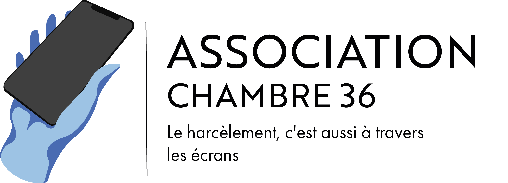

Ensemble luttons contre le cyber harcèlement.
Que vous en soyez victime ou témoin, la chambre 36 vous accompagne pour faire face à ce fléau.
Créée tout récemment par 10 jeunes étudiants, l’association chambre 36 vise à lutter contre le cyber harcèlement. Le digital a changé notre façon de communiquer que ce soit en bien ou en mal. Aujourd’hui, 1 adolescent sur 10 déclare avoir été victime de cyber violence. Un chiffre en constante hausse qui nous a poussé à agir en sensibilisant les plus jeunes, qui sont les plus exposés à ce phénomène, dès maintenant.
Rien de mieux que l’immersion pour comprendre les enjeux du cyber harcèlement.
À travers cet escape game découvre l’histoire de deux colocataires, Sarah et Chloé.
Découvre au fur et à mesure des indices, les différents signes d’alertes de cyber harcèlement.
Chloé et Sarah sont coloc’ et amie depuis maintenant 3 ans. Une journée comme les autres,
Sarah reçoit un message de la mère de Chloé s’inquiétant suite à son changement de comportement soudain.
Sarah ne comprend pas et décide de profiter de l’absence de Chloé sous la douche pour enquêter.
“Vous avez 10 minutes temps pour comprendre l’inquiétude de la mère de Chloé.”
Au fil des indices vous découvrirez différents signaux d’alertes concernant la santé mentale de Chloé.
Vous en cherchez la raison et découvrez qu’elle est victime de Cyber harcèlement.